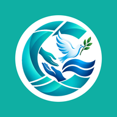

<!DOCTYPE html>
<html>
<head>
  <!--
    If you are serving your web app in a path other than the root, change the
    href value below to reflect the base path you are serving from.

    The path provided below has to start and end with a slash "/" in order for
    it to work correctly.

    For more details:
    * https://developer.mozilla.org/en-US/docs/Web/HTML/Element/base

    This is a placeholder for base href that will be replaced by the value of
    the `--base-href` argument provided to `flutter build`.
  -->
  <base href="$FLUTTER_BASE_HREF">

  <meta charset="UTF-8">
  <meta content="IE=Edge" http-equiv="X-UA-Compatible">
  <meta name="description" content="منصة الغدير — أطباء، مختبرات، أشعة. معاً لصحة أفضل.">

  <!-- iOS meta tags & icons -->
  <meta name="mobile-web-app-capable" content="yes">
  <meta name="apple-mobile-web-app-status-bar-style" content="black">
  <meta name="apple-mobile-web-app-title" content="منصة الغدير">
  <link rel="apple-touch-icon" href="icons/Icon-192.png">

  <!-- Favicon -->
  <link rel="icon" type="image/png" href="favicon.png"/>

  <title>منصة الغدير</title>
  <link rel="manifest" href="manifest.json">
</head>
<body>
  <!--
    You can customize the "flutter_bootstrap.js" script.
    This is useful to provide a custom configuration and give the user
    feedback during the initialization process.

    For more details:
    * https://docs.flutter.dev/platform-integration/web/initialization
  -->
  <script src="flutter_bootstrap.js" async></script>

  <!-- تنبيه «أضف الغدير للشاشة الرئيسية»: الويب فقط، مرة وحدة، وما يطلع بوضع standalone. -->
  <style>
    #gh-a2hs {
      position: fixed; z-index: 2147483000; left: 12px; right: 12px;
      top: calc(12px + env(safe-area-inset-top, 0px));
      max-width: 420px; margin: 0 auto; direction: rtl;
      background: #FFFFFF; color: #0F2A3D; border-radius: 18px;
      border: 1px solid #E1ECEE; box-shadow: 0 12px 32px rgba(0, 61, 130, .18);
      font-family: -apple-system, "SF Arabic", "Segoe UI", Tahoma, "Noto Sans Arabic", sans-serif;
      overflow: hidden; animation: gh-a2hs-in .3s ease-out;
    }
    #gh-a2hs .bar { height: 4px; background: linear-gradient(90deg, #0FAFA3, #003D82); }
    #gh-a2hs .row { display: flex; align-items: center; gap: 10px; padding: 12px 14px 4px; }
    #gh-a2hs img { width: 40px; height: 40px; border-radius: 11px; }
    #gh-a2hs b { flex: 1; font-size: 15px; }
    #gh-a2hs button {
      border: 0; background: #EAF4F6; color: #003D82; width: 30px; height: 30px;
      border-radius: 50%; font-size: 18px; line-height: 30px; cursor: pointer;
    }
    #gh-a2hs ol { margin: 0; padding: 4px 34px 14px 14px; font-size: 14px; line-height: 1.8; color: #5B6C70; }
    #gh-a2hs ol b { color: #0FAFA3; font-size: 14px; }
    @keyframes gh-a2hs-in { from { opacity: 0; transform: translateY(-10px); } to { opacity: 1; transform: none; } }
  </style>
  <script>
    (function () {
      var KEY = 'ghadeer_a2hs_shown';
      try { if (localStorage.getItem(KEY)) return; } catch (e) { return; }
      var standalone = (window.matchMedia && window.matchMedia('(display-mode: standalone)').matches) ||
        window.navigator.standalone === true;
      if (standalone) return;
      var ua = navigator.userAgent || '';
      var ios = /iPhone|iPad|iPod/i.test(ua) ||
        (navigator.platform === 'MacIntel' && navigator.maxTouchPoints > 1);
      var android = /Android/i.test(ua);
      if (!ios && !android) return;

      var steps = ios
        ? ['اضغط زر <b>المشاركة</b> بالمتصفح', 'اختار <b>إضافة إلى الشاشة الرئيسية</b>']
        : ['افتح <b>قائمة المتصفح</b> (⋮)', 'اختار <b>إضافة للشاشة الرئيسية</b>'];

      setTimeout(function () {
        try { localStorage.setItem(KEY, '1'); } catch (e) {}
        var box = document.createElement('div');
        box.id = 'gh-a2hs';
        box.setAttribute('role', 'dialog');
        box.innerHTML = '<div class="bar"></div><div class="row">' +
          '' +
          '<b>أضف الغدير للشاشة الرئيسية</b>' +
          '<button type="button" aria-label="إغلاق">×</button></div>' +
          '<ol><li>' + steps[0] + '</li><li>' + steps[1] + '</li></ol>';
        box.querySelector('button').onclick = function () { box.remove(); };
        document.body.appendChild(box);
      }, 4000);
    })();
  </script>
</body>
</html>
